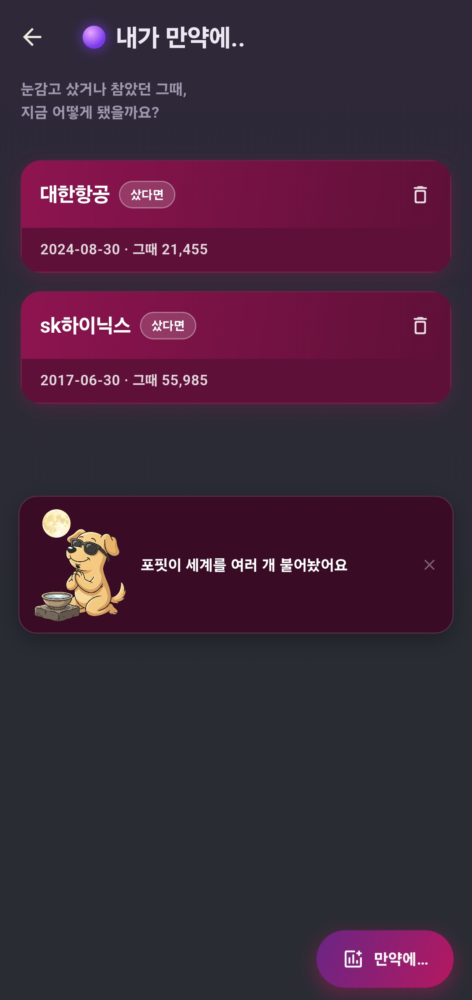
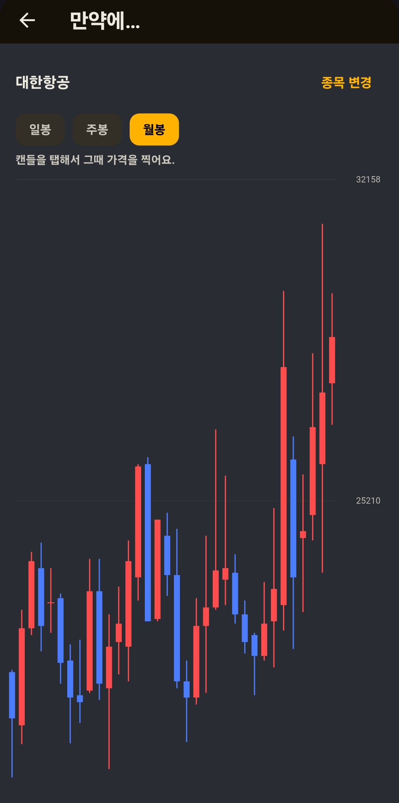
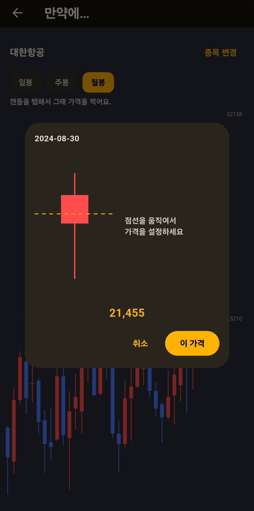
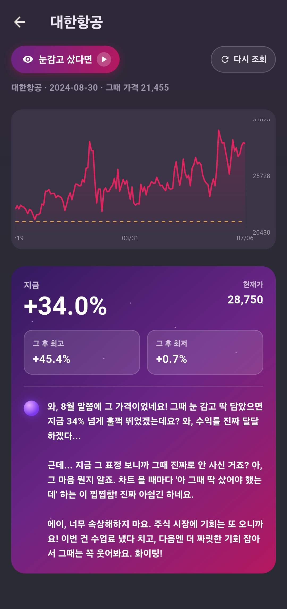

그때 살걸… 팔걸… 하고 '껄무새'처럼 후회한 적 있으시죠? 😅 그 시점에 눈감고 샀더라면, 혹은 안 팔고 참았더라면 지금 어땠을지 — 포핏과 함께 알아봐요. 손익을 따지는 게 아니라, '만약에'를 재미로 돌려보는 거예요.
👀
눈감고 샀다면
그때 안 샀는데, 눈 딱 감고 샀더라면
안 팔고 참았다면
그때 팔았는데, 안 팔고 버텼더라면
이렇게 써요
하루 한 번 — "만약에…" 열기
메뉴를 열면 그동안 찍어둔 멀티버스 카드가 쌓여 있어요. 오늘 쓸 수 있으면 포핏이 "세계를 여러 개 불어놨어요" 하고 알려줘요. 오른쪽 아래 "만약에…" 버튼으로 시작해요.

메뉴를 열면 — 지난 멀티버스 + "만약에…" 버튼
종목 검색 → 캔들 차트
궁금한 종목을 검색하면 캔들 차트가 떠요. 일봉·주봉·월봉을 바꿔가며, 그때 그 시점을 찾아요. (두 손가락으로 확대하고, 좌우로 밀 수 있어요)

일·주·월봉 캔들에서 그때를 찾아요
봉을 탭해서 "그때 가격"을 콕
궁금한 캔들을 탭하면 그 봉이 크게 떠요. 점선을 위아래로 드래그해서 그때 가격을 맞춰요 — 숫자를 직접 입력하지 않아도 돼요. 정했으면 "이 가격".

점선을 밀어 그때 가격을 콕 → "이 가격"
방향 선택 — 샀다면? 참았다면?
마지막으로 👀 눈감고 샀다면 / 안 팔고 참았다면 중 하나를 골라요. 그러면 그 가정으로 멀티버스가 열려요.
결과 — ▶ 누르면 그 뒤가 펼쳐져요
처음엔 내가 찍은 그 지점까지만 차트가 나와 있어요. 왼쪽 위 "눈감고 샀다면 ▶"(또는 "안 팔고 참았다면 ▶")를 누르면, 그 뒤로 지금까지 흐름이 쭉 펼쳐지는 연출과 함께 결과가 떠요 — 지금 몇 %, 그 후 최고·최저, 그리고 포핏의 한마디.

지금 +○○% · 그 후 최고/최저 · 포핏의 멀티버스 한마디
알아두면 좋아요
▶ 다시 눌러도 결과는 그대로예요. 한 번 연 멀티버스는 그날 본 결과가 그대로 남아 있어요. ▶를 다시 눌러도 펼침 연출만 다시 볼 뿐, 결과와 멘트는 똑같아요.
🔁 "다시 조회"는? 상단 "다시 조회"를 누르면 하루치를 더 반영해 결과를 새로 뽑아요. 단, 이건 하루 1회 횟수를 소모해요(희망회로와 같은 게이트). 소진되면 다음 날 다시 열려요.
참고용이에요. AI가 만든 재미 콘텐츠라 실제와 다를 수 있어요. 투자 판단은 꼭 직접 확인하고 하세요.